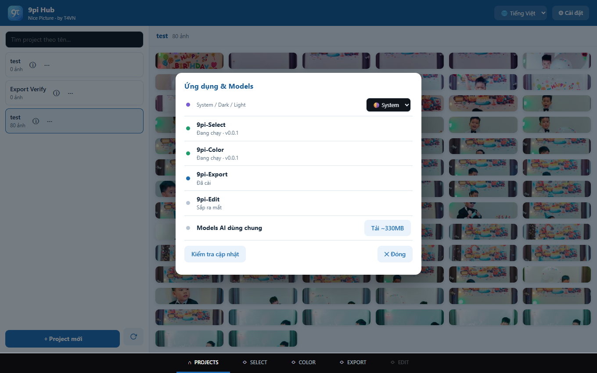
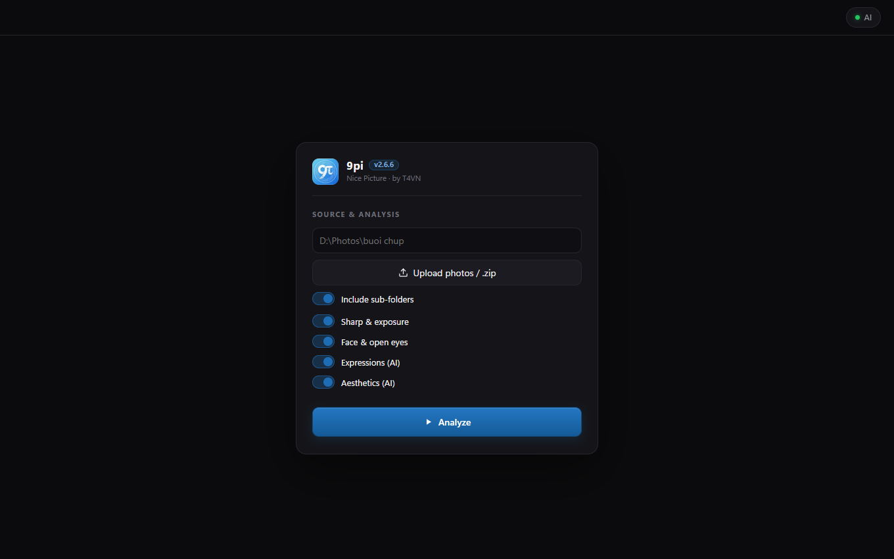
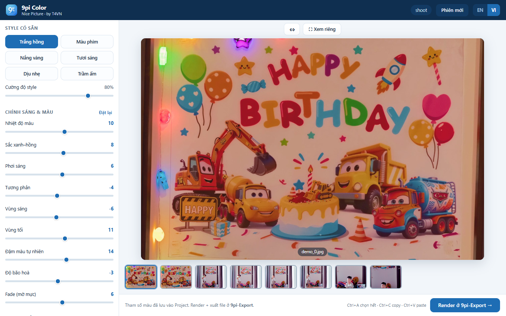
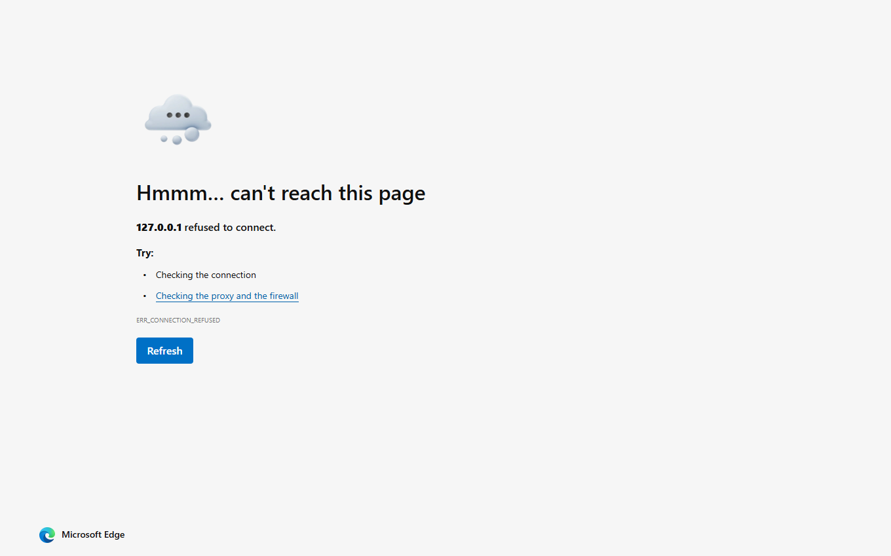

Bấm ⚙ Settings (góc phải trên): cài sub-app chưa có, tải models AI (~330MB, tải 1 lần),
chọn theme System/Dark/Light. Khi đang tải, app khóa thao tác đến khi xong.

💡 Sau khi cài xong sub-app, chuyển tab tương ứng ở thanh dưới để bắt đầu làm việc.
9pi-Select — lọc chọn ảnh đẹp bằng AI
Chọn thư mục buổi chụp, AI chấm điểm từng ảnh (độ nét, mắt mở, cảm xúc, thẩm mỹ)
và đề xuất những tấm đẹp nhất.
Các bước
Dán đường dẫn thư mục → Analyze. AI chấm điểm (lần đầu tự tải models ~330MB).
Kết quả: viền xanh = AI đề xuất. Bấm ảnh để phóng, tick ✓ chọn thủ công.
Bộ lọc trái: số lượng cần chọn, sort theo điểm, chỉ hiện đề xuất / chỉ hiện đã chọn.
Bấm Export để copy ảnh đã chọn sang 9pi-Color tiếp tục.

💡 Chỉnh "Photos to pick" để AI đề xuất nhiều/ít hơn. Mọi tiêu chí có thể
kết hợp: chỉ ảnh có người + mắt mở + cảm xúc vui.
9pi-Color — chỉnh màu hàng loạt
Áp style có sẵn hoặc tự chỉnh 9 tham số màu. Tham số lưu theo từng ảnh.
Các bước
Chọn ảnh ở dải dưới → chọn style có sẵn (Trắng hồng, Màu phim…) và
kéo Cường độ style.
Chỉnh tinh bằng 9 thanh: nhiệt độ màu, phơi sáng, tương phản…
Ctrl+C copy tham số ảnh này → chọn ảnh khác → Ctrl+V dán.
Ctrl+A chọn tất cả để dán hàng loạt.
Bật ⇔ So sánh để xem trước/sau (kéo trượt, 2 bên, trên dưới).
Bấm Render ở 9pi-Export để xuất file.

💡 Mỗi ảnh có tham số riêng — ảnh chưa chỉnh giữ nguyên. Ảnh đã chỉnh có
viền cam + badge số tham số ở dải dưới.
9pi-Export — render & xuất file
Bước cuối: render toàn bộ ảnh với tham số màu từng ảnh, xuất JPEG hàng loạt.
Các bước
Chọn thư mục đích (Browse…).
Chọn chất lượng JPEG, cạnh dài tối đa (resize giữ tỉ lệ),
tiền tố tên file nếu cần.
Tích Chỉ xuất ảnh đã tick chọn nếu muốn xuất một phần.
Bấm Export — thanh tiến độ hiện từng ảnh, xong bấm Mở thư mục.

💡 Giữ nguyên EXIF + ICC profile. Ảnh gốc không bao giờ bị ghi đè.
Cài đặt export được lưu lại cho lần sau.